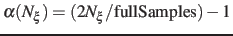
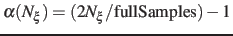

ABF depends on parameters from collective variables to define the grid on which free
energy gradients are computed. In the direction of each colvar, the grid ranges from
lowerBoundary to upperBoundary, and the bin width (grid spacing)
is set by the width parameter (see 3.1).
The following specific parameters can be set in the ABF configuration block
(in addition to generic bias parameters such as colvars
- section 6):
-
fullSamples
 Number of samples in a bin prior
to application of the ABF
Number of samples in a bin prior
to application of the ABF
Context: abf
Acceptable values: positive integer
Default value: 200
Description: To avoid nonequilibrium effects due to large fluctuations of the force exerted along the
colvars, it is recommended to apply a biasing force only after a the estimate has started
converging. If fullSamples is non-zero, the applied biasing force is scaled by a factor
 between 0 and 1.
If the number of samples
between 0 and 1.
If the number of samples  in the current bin is higher than fullSamples,
the factor is one. If it is less than half of fullSamples, the factor is zero and
no bias is applied. Between those two thresholds, the factor follows a linear ramp from
0 to 1:
.
in the current bin is higher than fullSamples,
the factor is one. If it is less than half of fullSamples, the factor is zero and
no bias is applied. Between those two thresholds, the factor follows a linear ramp from
0 to 1:
.
-
maxForce Maximum magnitude of the ABF force
Context: abf
Acceptable values: positive decimals (one per colvar)
Default value: disabled
Description: This option enforces a cap on the magnitude of the biasing force effectively applied
by this ABF bias on each colvar. This can be useful in the presence of singularities
in the PMF such as hard walls, where the discretization of the average force becomes
very inaccurate, causing the colvar's diffusion to get ``stuck'' at the singularity.
To enable this cap, provide one non-negative value for each colvar. The unit of force
is kcal/mol divided by the colvar unit.
-
hideJacobian Remove geometric entropy term from calculated
free energy gradient?
Context: abf
Acceptable values: boolean
Default value: no
Description: In a few special cases, most notably distance-based variables, an alternate definition of
the potential of mean force is traditionally used, which excludes the Jacobian
term describing the effect of geometric entropy on the distribution of the variable.
This results, for example, in particle-particle potentials of mean force being flat
at large separations.
Setting this parameter to yes causes the output data to follow that convention,
by removing this contribution from the output gradients while
applying internally the corresponding correction to ensure uniform sampling.
It is not allowed for colvars with multiple components.
-
outputFreq Frequency (in timesteps) at which ABF data files are refreshed
Context: abf
Acceptable values: positive integer
Default value: Colvar module restart frequency
Description: The files containing the free energy gradient estimate and sampling histogram
(and the PMF in one-dimensional calculations) are written on disk at the given
time interval.
-
historyFreq Frequency (in timesteps) at which ABF history files are
accumulated
Context: abf
Acceptable values: positive integer
Default value: 0
Description: If this number is non-zero, the free energy gradient estimate and sampling histogram
(and the PMF in one-dimensional calculations) are appended to files on disk at
the given time interval. History file names use the same prefix as output files, with
``.hist'' appended.
-
inputPrefix Filename prefix for reading ABF data
Context: abf
Acceptable values: list of strings
Description: If this parameter is set, for each item in the list, ABF tries to read
a gradient and a sampling files named  inputPrefix
inputPrefix .grad
and inputPrefix.count. This is done at
startup and sets the initial state of the ABF algorithm.
The data from all provided files is combined appropriately.
Also, the grid definition (min and max values, width) need not be the same
that for the current run. This command is useful to piece together
data from simulations in different regions of collective variable space,
or change the colvar boundary values and widths. Note that it is not
recommended to use it to switch to a smaller width, as that will leave
some bins empty in the finer data grid.
This option is NOT compatible with reading the data from a restart file (colvarsInput option of the NAMD config file).
.grad
and inputPrefix.count. This is done at
startup and sets the initial state of the ABF algorithm.
The data from all provided files is combined appropriately.
Also, the grid definition (min and max values, width) need not be the same
that for the current run. This command is useful to piece together
data from simulations in different regions of collective variable space,
or change the colvar boundary values and widths. Note that it is not
recommended to use it to switch to a smaller width, as that will leave
some bins empty in the finer data grid.
This option is NOT compatible with reading the data from a restart file (colvarsInput option of the NAMD config file).
-
applyBias Apply the ABF bias?
Context: abf
Acceptable values: boolean
Default value: yes
Description: If this is set to no, the calculation proceeds normally but the adaptive
biasing force is not applied. Data is still collected to compute
the free energy gradient. This is mostly intended for testing purposes, and should
not be used in routine simulations.
-
updateBias Update the ABF bias?
Context: abf
Acceptable values: boolean
Default value: yes
Description: If this is set to no, the initial biasing force (e.g. read from a restart file or
through inputPrefix) is not updated during the simulation.
As a result, a constant bias is applied. This can be used to apply a custom, tabulated
biasing potential to any combination of colvars. To that effect, one should prepare
a gradient file containing the gradient of the potential to be applied (negative
of the bias force), and a count file containing only values greater than
fullSamples. These files must match the grid parameters of the colvars.
Jérôme Hénin
2015-02-27